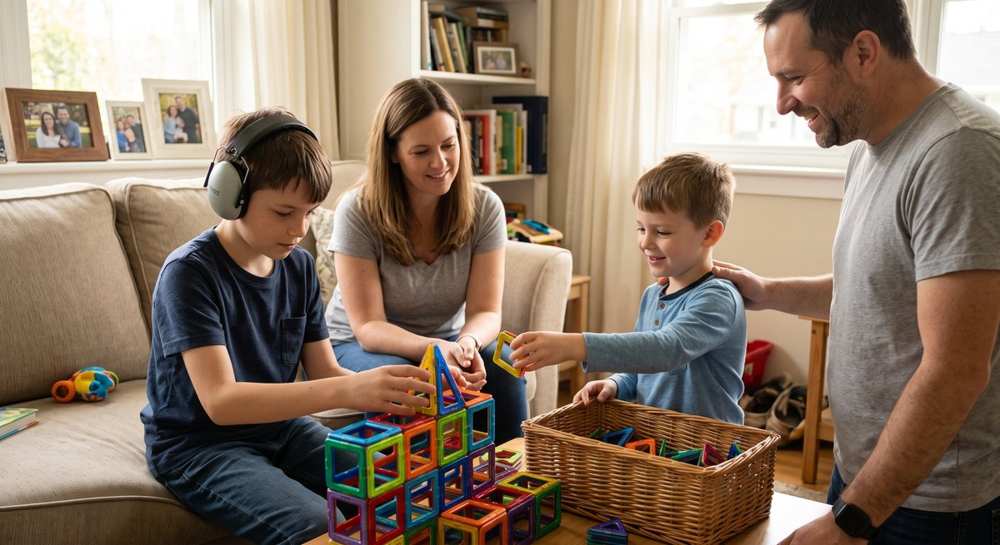
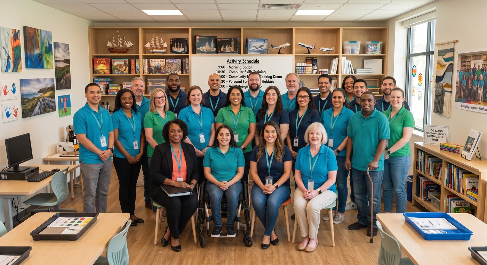

Community
A community centered on respect, support, and thoughtful connection
At aSuggestion, we encourage every author to write with clarity, respect, and consideration. This is not a space for conflict, but rather a community for growth, understanding, and meaningful connection.
Guided Support
Resources for every part of the care network
When you encounter perspectives that differ from your own, see them as opportunities to listen, share, learn, and perhaps even teach. We remind our readers to pause before reacting, reflect on the comments received, and respond thoughtfully.
Whether you've joined us to participate in safe and welcoming social rooms or to exchange ideas with family, colleagues, or new connections, we invite you to relax and enjoy the experience. Together, we can make aSuggestion a place where every voice is valued and every interaction leaves us better than before.
Support Track
Individuals Living with Autism, I/DD, or Behavioral Health Needs
Autism, Intellectual and Developmental Disabilities (I/DD), and other mental and behavioral health needs show up differently for every person, and that's completely okay. Everyone grows and develops at their own pace, and needing more support in areas such as learning, communicating, or completing everyday tasks is nothing to feel any less than proud of.
Taking care of yourself is important. Following a daily routine can make life feel easier and less stressful, while eating healthy foods and staying active helps you feel better overall. Try doing tasks on your own when possible, but remember it's always okay to ask for help. Our Life Gamified checklists turn routines like these into small, trackable wins, since you're only ever competing against your own best.
With patience and practice, you can become more confident in your abilities. Focus on your strengths and use them to overcome challenges. Join a themed social room to connect with others who get it, or ask our AI cooking and storytelling tools for a fun, guided way to practice something new. Each step you take, no matter how small, brings you closer to living a happier and more independent life.


Support Track
Families
Having a loved one living with autism, I/DD, or behavioral health needs can bring unique challenges and also deep joy and meaning. Every person's journey is different, and every family's path is unique. A consistent routine helps reduce anxiety and supports independence.
Caring for overall well-being is just as important. Balanced meals, regular physical activity, good sleep, and mental health care lay the foundation for long-term health. Medical and therapy appointments also play a key role in development. You can schedule a direct Check-In Chat with your loved one's care team right from the platform, no separate app or phone tag required.
It is equally essential to focus on strengths rather than just needs. Celebrating abilities and interests nurtures a sense of purpose, while a strong support network reminds families that they do not have to face the journey alone. De-identified progress summaries give you real visibility into how things are going, without compromising anyone's privacy.
Support Track
Caregivers
As a caregiver for someone living with autism, I/DD, or behavioral health needs, your role is deeply important and uniquely demanding. It can bring moments of reward, joy, and connection, but it can also feel challenging and overwhelming. Establishing a consistent routine is one of the most effective ways to create structure and reduce stress.
Supporting healthy living is another essential part of caregiving. This includes nutritious meals, regular physical activity, good sleep, and attention to emotional well-being. Staying on top of medical and therapy care is also crucial. Guided Notes give you structured, audit-ready shift documentation built around how care actually happens, so paperwork stops eating into time you'd rather spend on care itself.
Clear and accessible communication matters, whether through visuals, gestures, simple words, or assistive devices. Practicing patience and empathy throughout the journey helps ensure that progress is met with encouragement rather than judgment. A quick Check-In Chat is always one click away when you need to loop in the rest of the care team.


Support Track
Care Professionals and Agency Leadership
Overseeing a program or a caseload means balancing real human connection with real documentation and compliance demands, and the two shouldn't fight each other. The Wellbeing Dashboard gives you a live view of engagement trends across everyone your team supports, so a quiet drop-off never goes unnoticed.
Visit Trac captures the data elements required under the 21st Century Cures Act for a billable visit, without ever storing an address or protected health information. Person Centered Goals maps daily activity directly to a curated 100-item goal library, so progress is visible, not just assumed.
Every export, whether CSV or PDF, is built around permanent, de-identified IDs from day one, so field data can move where it needs to without ever putting a real name on the page.
Community Principles
Pause Before Responding
Thoughtful responses create safer, more useful conversations.
Lead With Respect
Different experiences deserve care, empathy, and dignity.
Protect Connection
The goal is not winning arguments, but building better understanding.